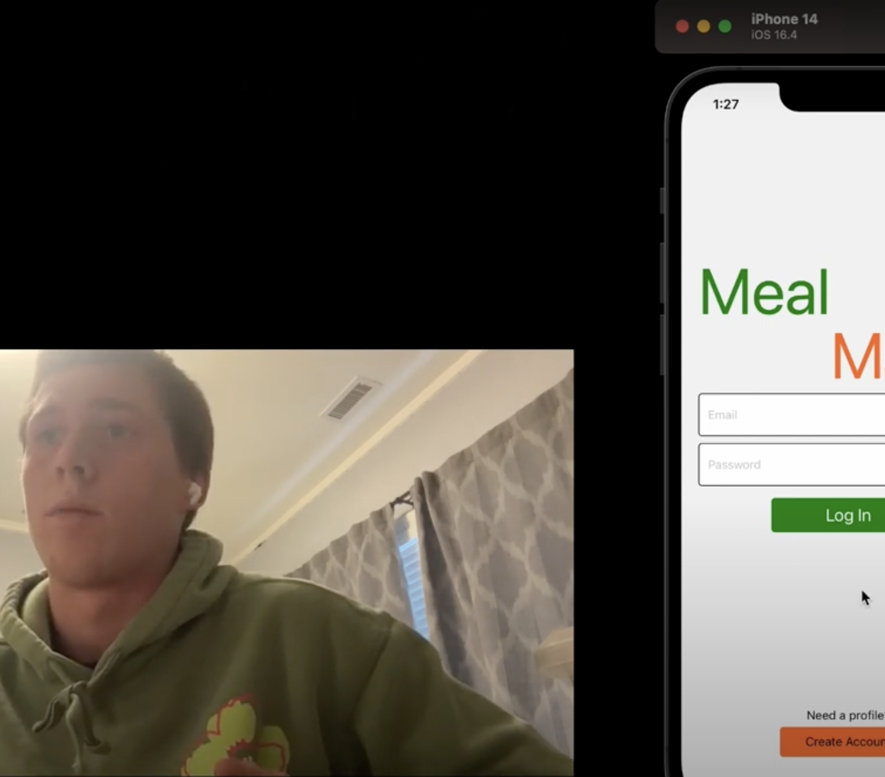

Back to Projects
Meal Maker

Overview
Meal Maker is an app where users can get meal suggestions based on preferences, on-hand ingredients, and dietary restrictions. This was a proejct to learn more about React Native and JavaScript.
Key Learnings
This was one of my first projects touching AI. I was really interested in this problem because things like chatGPT seemed a lot more capable of fitting complex requirements than a simple checkbox list
About a year later, this would be a great project to revisit with much stronger skills and better technology!